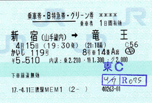

アロマ「かいじ１１９号の８号車は…」
焦りながら手元の切符を見ながら辺りを見渡すアロマちゃん。そして目の前にはまさに今新宿駅を発車したばかりの特急かいじ号が！
アロマ「どうしよう…これに乗るはずだったのに」
ＪＲ中央本線の竜王駅を目指すはずのアロマちゃんでしたが、そこはおっちょこちょいな性格なので、複雑な新宿駅でいろんなトラブルに巻き込まれるのでした。
最初は間違えて９番線の「青梅ライナー」号に乗ってしまい…これは寸前で気が付いてすぐに降りましたが、目当てのかいじ号が停車している６番線に移動するまでにはまた新たなトラブルが…。新宿駅は２００４年秋の工事によって６番線へは一度８番線のホームへ下りる必要があり、アロマちゃんが苦労して６番線のホームにたどり着いたときにはすでに発車ベルも鳴り終わっていたのでした。
特急に乗り遅れて涙を浮かべるアロマちゃんを車内からの視点で描こうと決めていましたが、描いてみたら絵的に寂しかったのでカメリちゃんを急遽追加。動きは遅いけど割と冷静なカメリちゃんは発車時間に間に合うという個人的解釈付きで(^^;。ちなみにカメリちゃんも８号車のグリーン車に乗車です(^^)。
今回の絵のネタは、２００４年秋に蒼ちゃんよりいただきました（ありがとうございます）。サイト休止期間中である４月は時間があったので、取材も兼ねて実際にかいじ１１９号に乗ってきました(^◇^;)。６番線ホームまでの遠い道のりには私の方もびっくりしましたよ。

最後に、蒼ちゃんより当時いただいたネタを掲載いたします。元々のネタは松本行きの臨時運転でしたが、取材した時期は通常の竜王行きでしたので、すみませんが松本を竜王に置き換えさせていただきました。
|
エピソード アロマは蒼湊の連絡を受け，一路松本へ行くことに |
(2005/5/28)